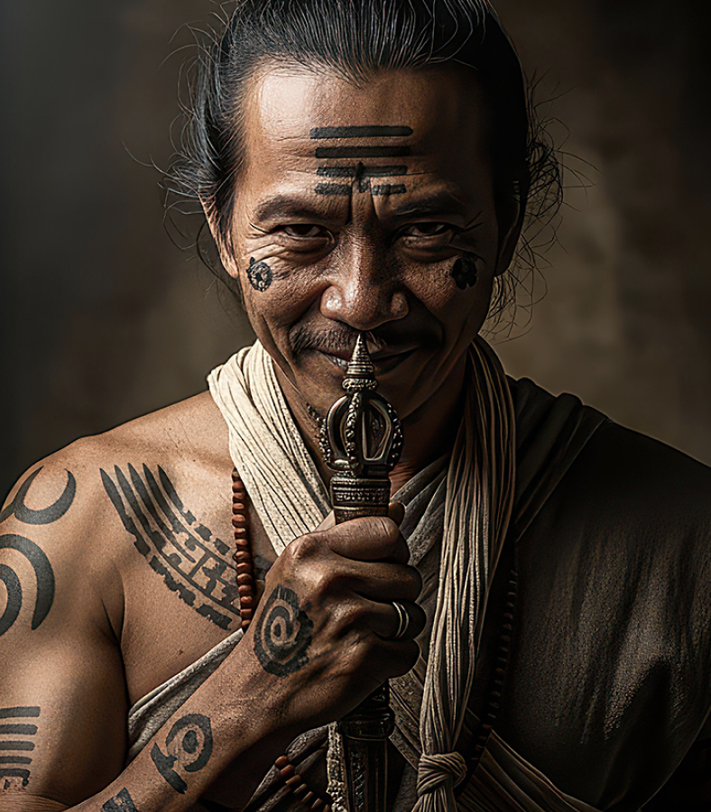

Tato Dayak Terakhir
Serial ini menelusuri jejak tato Dayak sebagai bahasa visual, identitas, dan ingatan kebudayaan. Cerita dimulai dari Pak Ding, penjaga narasi yang memperlihatkan bagaimana tanda di tubuh menyimpan hubungan manusia dengan keluarga, alam, dan martabat.
Membaca Bahasa Visual dalam Tato Dayak
Ritual dan Proses Tradisional
Tato sebagai Identitas dan Status Sosial
Tato Dayak di Era Kontemporer
Simbol Kehidupan Setelah Mati
Pantangan dan Etika dalam Tato Dayak
Keindahan, Kekuatan, dan Martabat

Orisinal Lainnya

Tato Dayak
Bagian 1, Mengenal Pak Ding

Ritual Kematian Megah di Pegunungan
Bagian 2, Peran Kerbau dalam Upacara Adat

Asal Mula Rumah Panjang
Bagian 3, Cerita Komunitas dan Keluarga